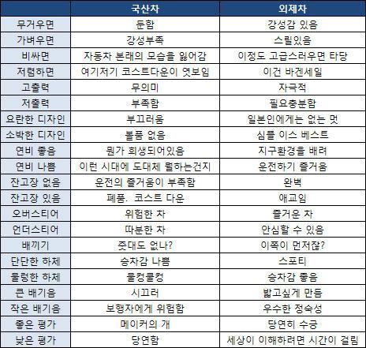

공식적인 명칭은 국산자동차. 단어의 순수한 의미는 국내에서 생산한 자동차를 가리킨다. 즉, 한국에 본사를 둔 자동차 제조사가 만든 것이라고 해도 해외 공장에서 생산한 것을 들여와 파는 경우는 엄밀히 말하면 수입차가 된다. 반대로 해외의 자동차 제조사가 국내에 공장을 세워 차를 만들면 그것이 국산차다. 하지만 일반적인 사람들은 국산차의 뜻을 한국 국적의 자동차 기업이 생산한 모든 차로 생각하는 만큼 생각의 차이가 생긴다.  이 표의 원본은 일본웹 5ch에서 나온 것이다. 일본의 경우는 국산차의 이미지가 나쁘지는 않으나, 그렇다고 부정적으로 보는 시각이 아예 없는 것은 아니다. 물론 미국차, 독일차 등 자국보다 대등하거나 높은 기술력을 보유한 나라의 차에 대한 인식이 좋을 뿐이지 자국보다 기술이 떨어지는 나라의 수입차까지 좋게 생각하지는 않는다. 한국에서 중국차의 인식이 바닥인 것처럼. 그렇다보니 여기서 예외는 독일. 자신들이 이미 1등이다 보니 독일인들의 자국차에 대한 자부심은 꽤 강한 편이다. 독일/문화도 참조. 대한민국의 여러 국산차 제조사는 전 세계적으로 고급, 고성능 자동차 제조사로서의 위상은 높다고 말하기는 어렵다. 브랜드 가치를 높이는 이러한 제품군보다는 많이 팔 수 있는 차량을 위주로 만들고 팔고 있기 때문인데, 그 결과 대한민국 내부에서조차 국산차 제조사의 브랜드 가치는 알려지긴 매우 잘 알려졌으나, 고급 브랜드로의 지명도는 전무한 상태를 유지하고 있다. 이러한 브랜드 가치는 어느 정도는 국내 자동차 제조사들이 자초한 면이 있다. 과거에는 확실히 독일이나 일본, 그리고 미국 자동차 제조사들과 기술 격차가 컸고, 지금은 그 격차가 줄어들었지만 여전히 차이가 제법 있다. 하지만 가격만 싸게 던진다고 덥석 소비자들이 사는 것이 자동차는 아닌 만큼 세계 5위권에 들 정도라면 품질과 성능은 어느 정도 글로벌 영역에 들 정도라고 볼 수 있다. 10~20년 전의 국산차만 보던 편견으로 지금의 국산차를 보면 성능과 품질이 개선되었다는 점을 알 수 있다. 이제 그래도 쏘나타나 아반떼가 미국 내 판매 대수로 20위권에 오르는 정도는 된다. 아무튼 국산차에 대한 사람들의 인식은 돈 있으면 벤츠, BMW, 아우디, 렉서스 같은 수입차 타고 더 있으면 벤틀리, 롤스로이스 같은 최고급 차를 타지 국산차를 왜 타나에 가깝다. 기술은 분명히 과거에 비하여 발전했다. 그나마 이러한 편견이 없는 사람이라도 일부 국산차의 품질 문제와 서비스에 대한 불만으로 국산차까로 발전하는 경우도 있다... 그리고 위와 같은 수입차 선호 현상은 2000년대 초중반 정도로 가보면 국산차들의 충돌테스트 성적이 수입차 대비 심각하게 떨어졌던 즉 안전성이 떨어졌던 시절이 있었다. 그러나 1세대 제네시스가 출시된 2008년 이후[1] 출시된 국산차들의 충돌테스트 성적은 동급 수입차들과 동등하거나 오히려 더 높은 성적을 보여주며 상위권의 안전성을 보여주며 안전 때문에 수입차를 선호하는 현상은 많이 줄어든 상황.